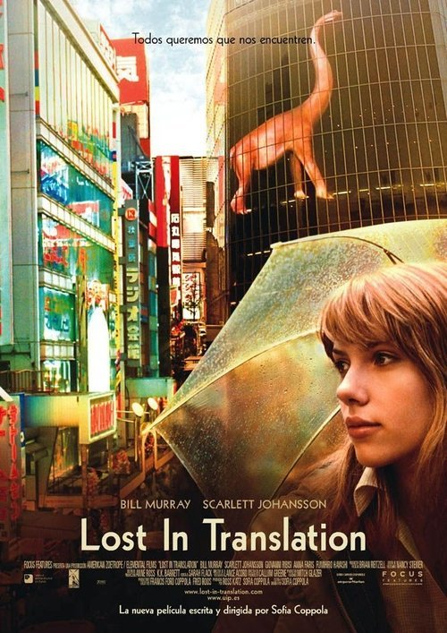

Lost in Translation (2003)
Sinopsis Rápida
Dos almas perdidas en la vibrante y caótica Tokio encuentran consuelo y conexión inesperada en la soledad de la cultura extranjera.
Sinopsis Detallada
Bob Harris, una estrella de cine en declive, y Charlotte, una joven esposa que acompaña a su fotógrafo esposo, se cruzan en un lujoso hotel de Tokio. Aislados por la barrera del idioma y la distancia emocional con sus parejas, forman una amistad profunda e íntima a través de la comunicación no verbal, explorando la soledad, la melancolía y la búsqueda de sentido en un mundo ajeno. La película captura sutilmente la belleza y la alienación de una experiencia culturalmente distante, dejando una profunda resonancia sobre la conexión humana en un mundo moderno.
¿Por qué tenés que verla?
- Una exploración conmovedora de la soledad y la conexión humana en un entorno extraño.
- La magistral dirección de Sofia Coppola crea una atmósfera única y poética.
- Su impacto en el cine independiente y su retrato de la experiencia cultural extranjera es perdurable.
- Actuaciones memorables de Bill Murray y Scarlett Johansson.
Idea Extra
Análisis de la banda sonora de Kevin Shields y su impacto en la atmósfera de la película.